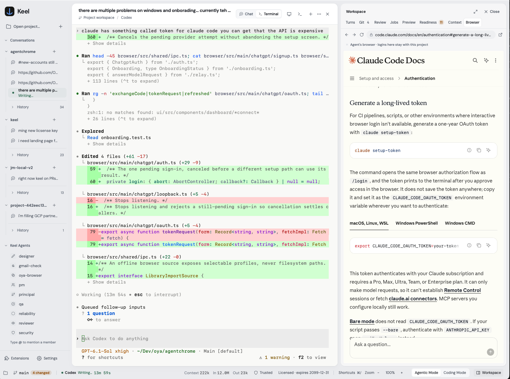

Tools for working with agents
Give your agents
room to work.
A workspace to build. A browser to act. A team to review.
Meet three tools that bring your agents into the work.
01 / Build Keel
Desktop workspaceYour coding agent.
A whole team around it.
Bring planning, design, implementation, and review into one desktop workspace. Keep tasks in separate lanes, inspect changes as they happen, and run your repository’s own checks.
Source available License terms

A branch for every task
Changes you can inspect
Approvals in the conversation
02 / Browse Oya Browser
Browser for agents- Step 01Record task
Start with the work you already do.
- Step 02Save playbook
Turn the sequence into a repeatable run.
- Step 03Replay with inputs
Same workflow. The next set of inputs.
Take the work to the web
A real browser.
Ready for your agents.
Work in signed-in sessions, record repeatable tasks, and replay them with new inputs. Connect through the desktop app, SDK, or MCP.
03 / Review Keel Reviewer
Pull request reviewsAnother perspective on every change
The team is in
your pull request.
Run specialist reviews in sequence and collect the result in one PR comment, updated on each push.
Set up Keel ReviewerInspects code and diffs.
Does not execute tests or change files.
- The inputCheckout + diff
- A sequence of perspectivesSpecialist reviews
PMDesignPrincipalReviewSecurityReliabilityQA
- The resultOne updated PR comment
Findings stay with the conversation.